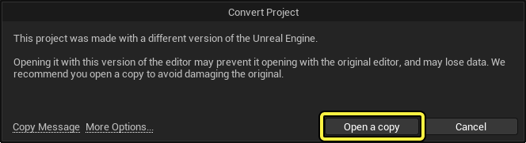

В этом руководстве описано, как обновить проекты Unreal Engine 4 до Unreal Engine 5 (UE5).
Unreal Engine 5 (UE5) вносит ряд изменений, обновлений и новых функций в системы, на которых работал Unreal Engine 4 (UE4). Несмотря на значительные изменения в движке, встроенный процесс конвертации выполняет большую часть работы по миграции без участия пользователя.
Для начала откройте UE5 в Epic Games Launcher. Если UE5 уже запущена, в главном меню перейдите в Файл > Открыть проект из главного меню. Затем выберите проект, который вы хотите обновить, и нажмите Открыть.
Нажмите кнопку Открыть копию, чтобы обновить отдельную копию проекта, оставив оригинал без изменений.

Если в этом диалоговом окне нажать Дополнительные параметры, вы сможете выбрать один из следующих вариантов:
После завершения процесса конвертации большинство проектов будут готовы к сборке и запуску в UE5 без дополнительных действий. Однако для корректной работы некоторых новых или обновленных функций в UE5 и использования всех ее возможностей может потребоваться ручная настройка. Среди наиболее значительных системных изменений — Nanite, Lumen и Chaos. В Nanite и Lumen потребуется внести некоторые изменения, чтобы проекты, ориентированные на графику, выглядели так же, как в UE4, а проекты с упором на физику, которые еще не перешли на Chaos, потребуют некоторой настройки и модификации ресурсов.
На этой странице рассказывается об обязательных обновлениях и других важных изменениях в системе, таких как отказ от поддержки и замена устаревших компонентов. Если вы используете эти функции, вам необходимо выполнить обновления, описанные в разделе Обязательные обновления, чтобы успешно перенести свои проекты из UE4 в UE5. Обновления, описанные в разделе Другие изменения, могут повлиять на ваши проекты, а могут и не повлиять, но о них стоит помнить.
Ознакомьтесь с таблицей ниже, чтобы понять, как будет конвертироваться ваш проект в зависимости от версии Unreal Engine, в которой он был создан.
| Проект, Созданный с использованием Версии | Примечания о преобразовании |
|---|---|
| Обновление Unreal Engine с 4.0 до 4.26 | Ваш проект будет загружаться в любой версии Unreal Engine, которая не уступает по версии той, в которой он был создан, или превосходит ее. API Unreal Engine со временем менялся, поэтому некоторые проекты, созданные на более старых версиях, могут загружаться некорректно. Например, Blueprints, сохраненные в версии 4.0, могут вызывать функции, которые были объявлены устаревшими в версии 4.10 и отсутствуют в версии 5.0. Тем не менее проект должен загружаться, и вы сможете исправить устаревшие или удаленные ссылки. |
| Unreal Engine 4.27 | Ваш проект будет работать в Unreal Engine 4.27, 5.0 и более новых версиях. Обратите внимание, что ваш проект не будет работать в Unreal Engine 5.0 в раннем доступе. Об этом сообщалось в разделе заметки о совместимости Unreal Engine 5.0 в раннем доступе. |
| Unreal Engine 5.0 | Ваш проект будет загружаться в Unreal Engine 5.0 и более новых версиях. |
| Unreal Engine 5.1 и более новые версии | Ваш проект будет загружаться в любой версии Unreal Engine, которая не уступает по версии той, в которой он был создан, или превосходит ее. |
Ресурсы, сохраненные в более старой версии Unreal Engine, можно открыть в более новой версии. Например, если вы сохранили ресурс в Unreal Engine 4.26, вы можете открыть его в Unreal Engine 5.0.
Активы, сохраненные в более новой версии Unreal Engine, не могут быть открыты в более старой версии. Например, если вы сохранили актив в Unreal Engine 5.0, вы не сможете открыть его в Unreal Engine 4.26.
В следующих разделах описаны изменения, которые необходимо внести в проект UE4, чтобы перенести его в UE5. Некоторые из этих изменений являются обязательными, другие — необязательными, но рекомендуемыми и станут обязательными в будущих версиях UE5.
Если вы пишете код на C++ в Visual Studio, вам необходимо перейти на Visual Studio 2019, если вы еще этого не сделали. Это также стандартная среда разработки Visual Studio для последней версии UE4. UE5 не поддерживает Visual Studio 2017 или Visual Studio 2015.
UE5 не поддерживает 32-разрядные платформы, и в будущем мы не планируем добавлять поддержку 32-разрядных платформ.
В UE5 стандартизированы имена целевых платформ. Вам нужно будет обновить скрипты сборки и, в некоторых случаях, DeviceProfiles.ini файлы. Это в первую очередь касается тех, кто запускает эти скрипты напрямую. Если вы используете UAT, вносить изменения не нужно.
В следующей таблице приведен список измененных названий целевых платформ:
| Название Целевой платформы UE4 | Название Целевой платформы UE5 |
|---|---|
| Windows | Редактор Windows |
| Редактор WindowsNoEditor | Windows |
| MacNoEditor | Mac |
| Mac | Редактор MAC |
| LinuxNoEditor | Linux |
| Linux | Редактор LinuxEditor |
| LinuxAArch64NoEditor | LinuxAArch64 |
В UE5 для физического моделирования используется движок Chaos Physics, который заменил PhysX в качестве движка по умолчанию. Физическое моделирование в Chaos Physics отличается от PhysX, поэтому разработчикам приходится вносить коррективы, чтобы добиться единообразия.
Тактовая частота физики будет изменяться для любых вновь созданных проектов по умолчанию. Изменение тактовой частоты будет доступно в разделе "Физика синхронизации" в настройках проекта (меню: Правка > Настройки проекта). Эта новая функция будет имитировать физику в своем собственном потоке, а не в игровом потоке.
Это изменение повышает детерминированность за счет фиксированного интервала обновления физического моделирования. Благодаря фиксированному интервалу обновления сетевое физическое моделирование проще синхронизировать, поскольку клиентские и серверные системы работают с одинаковым интервалом.
Если код больше не выполняется в игровом потоке, то между вводом данных в физическую систему из игрового потока и реакцией физической системы на этот ввод может возникнуть задержка. Эту задержку необходимо учитывать, чтобы избежать непредсказуемого поведения в проектах, где игровая логика во многом зависит от физического моделирования. Эту проблему можно решить, запустив код игрового процесса, сильно зависящий от физики, в обратных вызовах на C++, которые выполняются в физическом потоке, но для этого потребуется изменить код проекта.
В Unreal Engine 5 изменились консольные переменные, используемые для отладки шейдеров. В таблице ниже приведены их новые названия.
Если в конфигурационных файлах вашего проекта используются какие-либо из этих переменных, вам нужно будет обновить их при переходе на UE5, чтобы продолжать использовать сгенерированные данные для отладки шейдеров.
| Имя Старой переменной Консоли | Новое имя переменной Консоли | Описание |
|---|---|---|
| r.Shaders.KeepDebugInfo | r.Shaders.Symbols | Позволяет отлаживать шейдеры, генерируя символы и записывая их на диск для консолей. Символы для настольных компьютеров хранятся в сети. |
| N/A | r.Shaders.ExtraData | Генерирует имена шейдеров и любые дополнительные данные о шейдерах. |
| r.Shaders.PrepareExportedDebugInfo | r.Shaders.GenerateSymbols | Генерирует символы, но не записывает их на диск. Вместо этого символы сохраняются в кэше производных данных (Derived Data Cache, DDC). |
| r.Shaders.ExportDebugInfo | r.Shaders.WriteSymbols | Записывает символы на диск, если они были сгенерированы. |
| r.Shaders.AllowUniqueDebugInfo | r.Shaders.AllowUniqueSymbols | Создает ассоциации символов на основе исходного кода шейдера. По умолчанию эта функция отключена. |
| r.Shaders.ExportDebugInfo.Zip | r.Shaders.WriteSymbols.Zip | При записи символов на диск они сохраняются в виде одного ZIP-файла. |
Подробнее об этом процессе читайте на странице Отладка шейдеров.
В UE5 представлена TObjectPtr 64-битная система указателей на основе шаблонов, которая может использоваться в качестве альтернативы необработанным указателям на объекты в сборках для редактора. Эта система обеспечивает динамическое разрешение и отслеживание доступа в сборках для редактора, при этом в сборках без редактора она работает так же, как и необработанные указатели. TObjectPtr Переменные также автоматически преобразуются в необработанные указатели при передаче в функции или сохранении в локальных переменных. Во многих классах движка, в которых раньше использовались необработанные указатели в UPROPERTY переменных, теперь используются TObjectPtr. Хотя в большинстве случаев взаимодействие с типами TObjectPtr неявно преобразуется в работу с необработанными указателями, в некоторых редких случаях прямое взаимодействие с переменными-членами классов движка должно быть изменено с использования необработанных указателей на использование TObjectPtr-семантики. Например, свойство RootComponent в AActor было USceneComponent* в UE4, но в UE5 стало TObjectPtr USceneComponent-свойством. В некоторых редких случаях вам может потребоваться обновить прямое взаимодействие с RootComponent, хотя вызовы GetRootComponent, которые по-прежнему имеют USceneComponent*-тип возвращаемого значения, могут остаться без изменений.
Хотя это необязательно, мы рекомендуем использовать TObjectPtr вместо T* для свойств UObject указателей и контейнерных классов, встречающихся в типах UCLASS и USTRUCT . Поскольку TObjectPtr преобразуется в необработанные указатели для сборок без редактора, это не повлияет на поведение или производительность готового продукта, но может упростить разработку в сборках с редактором. Используйте следующие методы, чтобы адаптировать свой стиль программирования к этой новой системе указателей:
В UE5 есть UnrealObjectPtrTool — программа, которая автоматически преобразует необработанные указатели, видимые движком, в TObjectPtr систему. Вы можете найти ее в разделе UE5/Programs/UnrealObjectPtrTool/ иерархии решений в вашей IDE. Исходный код находится в Engine/Source/Programs/UnrealObjectPtrTool/. Исполняемый файл находится в вашей папке Engine/Binaries/Win64. В зависимости от вашей операционной системы или среды разработки этот исполняемый файл может находиться в папке Engine/Binaries/OS, где OS — название вашей операционной системы.
Чтобы использовать UnrealObjectPtrTool, выполните следующие действия:
Перейдите к файлу конфигурации DefaultEngine.ini UHT, расположенному в вашем Engine\Programs\UnrealHeaderTool\Config каталоге.
В файле DefaultEngine.ini измените следующий скрипт:
Пересоберите проект, чтобы убедиться, что весь код обработан UHT.
В зависимости от того, как вы компилируете свой проект, информация журнала UHT может находиться в файле с именем Log.txt или UnrealHeaderTool.log. Эти файлы можно найти в следующих папках:
Скомпилируйте UnrealObjectPtrTool из решения Visual Studio.
Запустите исполняемый файл UnrealObjectPtrTool:
Изменились следующие настройки по умолчанию, которые могут повлиять на внешний вид вашего проекта:
Nanite делает неактуальными большинство сценариев использования аппаратной тесселяции. Аппаратная тесселяция удалена из UE5. Для сценариев использования, которые не поддерживаются Nanite, пользователи могут при необходимости увеличить разрешение своих ресурсов.
Lumen заменяет объемы распространения света и глобальное освещение с учетом расстояния (Distance-Field Global Illumination, DFGI).
* По сравнению с Light Propagation Volumes, Lumen обладает дополнительными функциями, гораздо более высоким качеством и находится в стадии активной разработки, хотя и требует более высоких базовых затрат на производительность.
* DFGI была экспериментальной функцией; разработчикам следует использовать Lumen вместо DFGI для динамического глобального освещения.
* Со временем глобальное освещение и отражения Lumen заменят большинство функций трассировки лучей, обеспечив аналогичные или более качественные результаты.
Устаревший инструмент Tonemapper, поддержка которого была прекращена в UE4, не используется в UE5. Никаких действий со стороны разработчиков не требуется.
Разделение миров — это система, которую UE5 использует для работы с большими потоковыми мирами. Система Компоновка миров, которая использовалась в UE4, все еще существует, но она устарела и не будет получать обновлений, исправлений или поддержки. Компоновка миров будет удалена в одной из будущих версий UE5.
Чтобы преобразовать карты в систему World Partition, используйте WorldPartitionConvertCommandletв своем проекте и указывайте название каждой карты, которую нужно преобразовать, по очереди. Например, чтобы преобразовать карту TM_WorldComp_P, расположенную по адресу /Game/Maps/Tools/Landscape/TM_WorldComp_P в упакованном проекте QAGame, запустите редактор с параметрами командной строки:
Это позволит преобразовать картуTM_WorldComp_P в систему World Partition. Параметр -ConversionSuffix позволяет сохранить преобразованную карту под именем TM_WorldComp_P_WP вместо того, чтобы перезаписывать исходную карту. Благодаря параметру -SCCProvider=None командлет будет работать без взаимодействия с системой управления версиями вашего проекта. В результате этого процесса также будет создан файл TM_WorldComp_P.ini с настройками, используемыми для преобразования карты и для возможных будущих преобразований. В процессе преобразования из существующих данных World Composition создаются сетки времени выполнения (для системы World Parition), а объекты карты распределяются по соответствующим сеткам.
Разработчики на C++ могут использовать UWorldPartitionRuntimeSpatialHash::ImportFromWorldComposition и UWorldPartitionRuntimeSpatialHash::GetActorRuntimeGrid для изучения или изменения логики, связанной с созданием сеток и размещением в них объектов.
Новые инструменты для редактирования геометрии заменят экспериментальный устаревший плагин для редактирования сеток.
Очередь рендеринга для фильмов заменит захват сцен для фильмов.
Редактирование уровней в виртуальной реальности будет сокращено до поддержки только предварительного просмотра в виртуальной реальности, но UE5 по-прежнему будет поддерживать виртуальное производство.
Take Recorder заменит Sequence Recorder. Take Recorder включает в себя все функции Sequence Recorder.
Последовательности анимации камеры заменят анимацию камеры.
UE5 также удаляет пакеты функций редактора, связанные с удаленными плагинами. Пользователям этих плагинов необходимо убедиться, что они не ссылаются на удаленный контент в своих проектах.
Sequencer полностью заменит Matinee после выхода полной версии UE5. Matinee был признан устаревшим, но все еще использовался в UE4.
Пространства переименованы в Nulls. Гизимосы переименованы в фигуры. Команда «Установить начальное преобразование из текущего» теперь называется «Установить смещение преобразования из текущего».
Коллекции теперь заменены на массивы. Узел Transform Constraint устарел и заменен отдельными узлами ограничения по точке, повороту и родительскому узлу. Новый узел Parent Constraint можно использовать вместо узлов Project to New Parent и Set Transform. Исключение пространства теперь можно использовать вместо узла Parent Switch Constraint. Тип данных Bezier заменен на плагин Splines.
Unreal Audio Mixer заменит устаревшие аудиобэкенды в UE 5.0. Пользователям не нужно предпринимать никаких действий. В UE5 по умолчанию будет использоваться Unreal Audio Mixer и современные аудиобэкенды, совместимые со всеми существующими аудиофункциями.
Регулировка громкости звука, микширование звуковых классов и звуковые подсказки будут объявлены устаревшими в UE 5.0, а в будущих версиях UE5 их планируется удалить.
На смену Sound Cues придут MetaSounds, которые будут доступны в UE 5.0.
На смену Sound Class Mix придут системы модуляции и субмикширования, которые уже доступны.
На смену регулировке громкости звука придет новая система, которая сейчас находится в разработке и будет доступна в UE 5.0.
В UE5 не будет нативной поддержки Blueprint. В проектах, использующих эту функцию, не должно произойти никаких изменений, но может снизиться производительность. В этом случае разработчикам придется прибегнуть к другим подходам оптимизации.
Обработчики шифрования AES, RSA и RSA Key AES устарели и будут удалены.
Zen Loader заменит Event-Driven Loader. Поскольку большинство пользователей не взаимодействуют напрямую с Event-Driven Loader, это изменение не потребует никаких действий при переносе проекта.
Unreal Insights заменит систему статистики после выхода полной версии UE 5.0. Система статистики продолжит работать в UE 5.0, но со временем будет заменена на Unreal Insights.